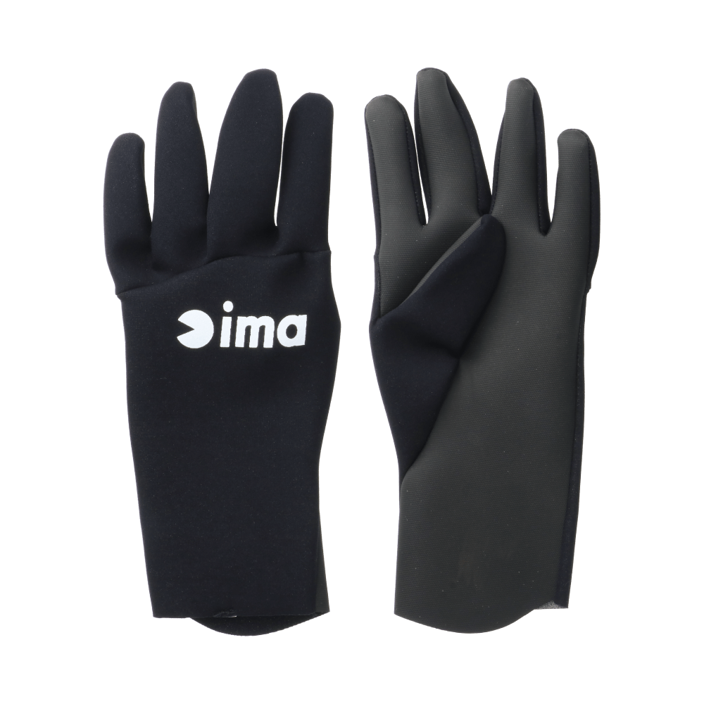
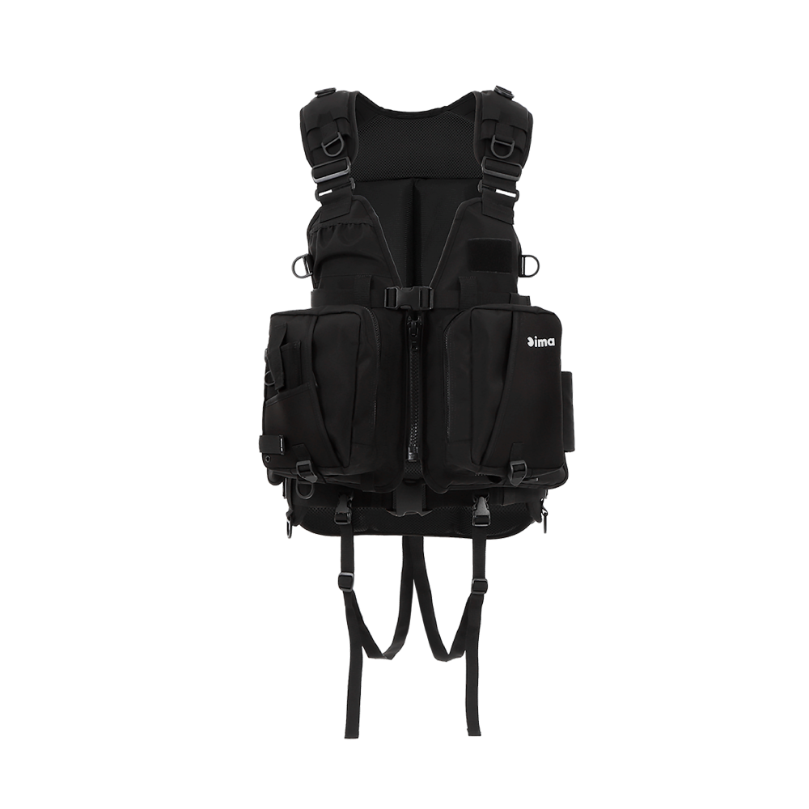
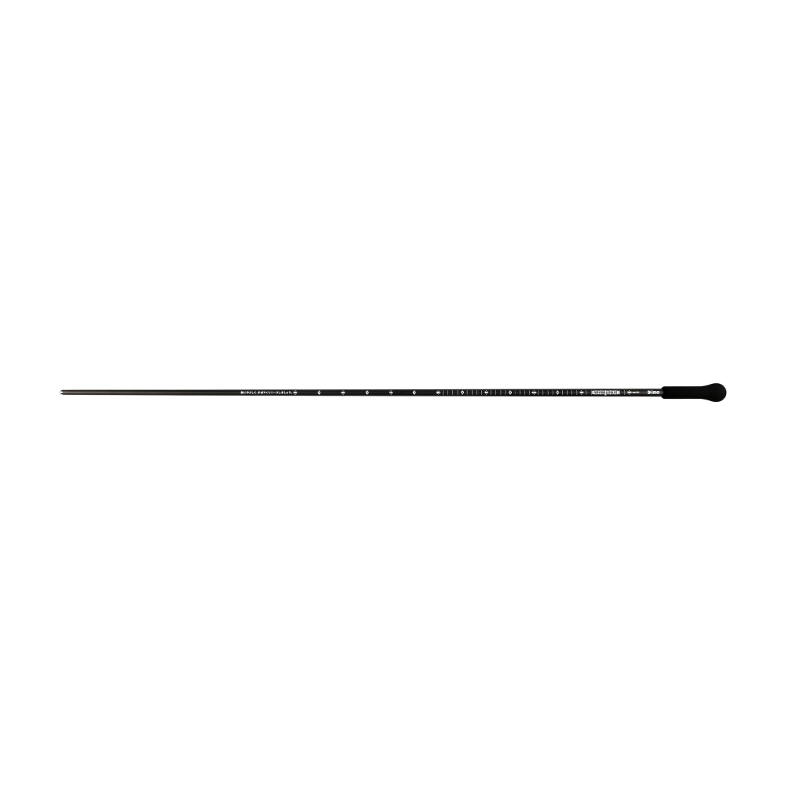

タイタニュームフィットグローブ
（ima TITANIUM FIT GLOVES）
タイタニュームフィットグローブ（ima TITANIUM FIT GLOVES）はima（アイマ）の防寒フィッシンググローブです。
高いストレッチ性でまとわりつくような「FIT」感のタイタニュームグローブで、クロロプレンよりも保温力の高い「タイタニュームα」素材を採用。カット箇所を少なくしてより保温力を高めています。柔らかい質感で長時間着けてもストレスが少なく、着脱も簡単です。

画像出典:ima公式HP
スペック
- メーカー
- ima（アイマ）
- タイプ
- 防寒フィッシンググローブ
- 種類
- FF（フルフィンガー）／3FC（3フィンガーカット）
- 素材
- タイタニュームα
- サイズ
- FF：M・L・XL／3FC：S・M・L・XL
- 価格
- 5,500円（税込）
▼今すぐチェック
タイタニュームフィットグローブの特徴
冬の釣りも“FIT”で快適に。保温力とフィット感を両立した防寒グローブ
-
クロロプレンより保温力の高い「タイタニュームα」
クロロプレンよりも保温力の高い「タイタニュームα」素材を使用。カット箇所を少なくしたことで、より保温力を高めている。
-
まとわりつくようなフィット感
高いストレッチ性で手にまとわりつくようなフィット感。柔らかい質感で、長時間の着用でもストレスが少ない。
-
スリムなシルエットと簡単な着脱
シルエットがスリムで見た目もすっきり。柔らかい素材で着脱も簡単。
タイタニュームフィットグローブの使い方
保温力を最優先するならFF（フルフィンガー）、ライン操作やルアー交換など指先を使う作業が多いなら3FC（3フィンガーカット）を選ぶのが基本です。
通常のタイタニュームより柔らかい素材なので、着脱の際は強引に引っ張らず、指先から少しずつ外すようにしましょう。
タイタニュームフィットグローブのがおすすめの人
冬のシーバスや渓流、磯など、寒い時期の釣りで手を冷やしたくない人に向いたグローブです。
分厚い防寒グローブだと操作しにくい、という人にもフィット感の高いこのグローブはオススメです。
ワンポイント
通常よりスリムでとてもフィット感のあるグローブなので、普段のサイズ感で着けたい場合はワンサイズ上を選ぶのがメーカーのオススメです。
使用後は真水で洗って塩分を落とし、陰干しで乾かすと長持ちします。
タイタニュームフィットグローブの使い分け
| 項目 | 仕様 | ポイント |
|---|---|---|
| FF（フルフィンガー） | タイタニュームα／M・L・XL | 全指を覆って保温力を最優先 |
| 3FC（3フィンガーカット） | タイタニュームα／S・M・L・XL | 3本の指先が出せて、細かい作業がしやすい |
どちらも価格は5,500円（税込）。保温力重視ならFF、操作性重視なら3FCと選び分けましょう。
ディテール
タイタニュームフィットグローブの2タイプを紹介します。

FF（フルフィンガー）全指を覆うタイプ。保温力を最優先したいときに。
 3FC（3フィンガーカット）
3FC（3フィンガーカット）
3本の指先をカットしたタイプ。ライン操作やルアー交換がしやすい。
画像出典:ima公式HP
タイタニュームフィットグローブとあわせてチェックしたいアイテム
-

フローティングベスト X-0III ima 詳細はこちら＞imaのX型フローティングベスト。冬のウェーディングや磯の装備とあわせて。
-

ウェーディングスタッフ ima 詳細はこちら＞imaのワンピースのウェーディングスタッフ。114gと軽く水に浮き、ウェーディングの足元の安全確保に。
-
 カワバンガ（COWABUNGA!!）
ima
詳細はこちら＞
カワバンガ（COWABUNGA!!）
ima
詳細はこちら＞
imaのメイドインジャパンのシーバスロッド。